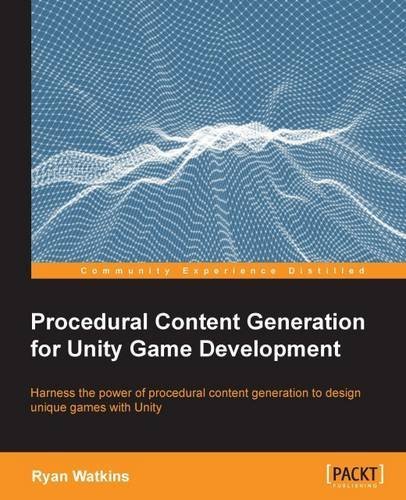
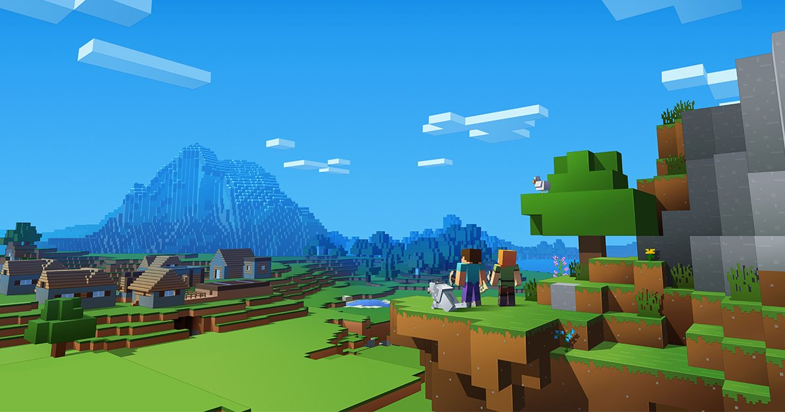
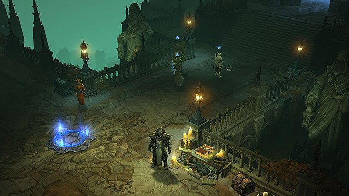
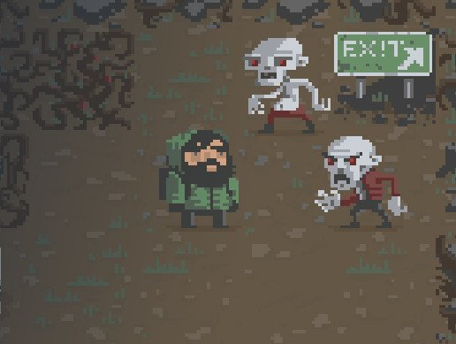
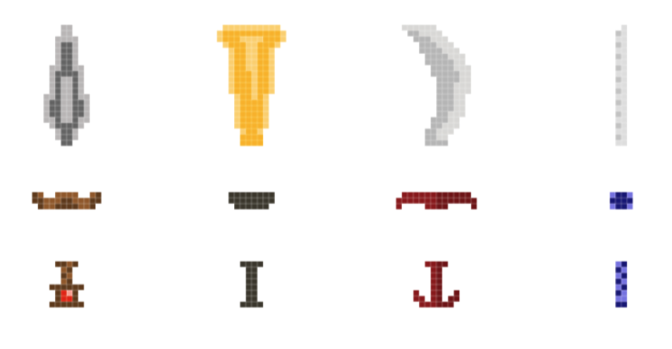

這次在 FREE LEARNING – FREE TECHNOLOGY EBOOKS 活動中
免費取得了這本 Procedural Content Generation for Unity Game Development
利用這篇文章來簡短的紀錄書中的內容
並提供給想要閱讀這本書的開發者們一個初步的介紹

Procedural content generation（PCG）
程序化內容生成是一種相當廣泛應用的技術
透過這種技術可以產生出不可預期的隨機結果
遊戲關卡、角色、道具、貼圖、音效…等都可以透過 PCG 來加以強化
而著名的遊戲 Minecraft 中
也利用了 PCG 技術產生隨機地形
讓玩家在每次遊玩時都可以有不一樣的遊戲體驗

在許多遊戲中也可以看到這種技術的應用
Blizzard Entertainment’s Diablo series – 關卡設計

dreeps – AI 行為
.kkrieger – 貼圖生成
Speed Tree – 物件生成
The Elder Scrolls 5: Skyrim – 任務系統
Pseudo random numbers（PRNs）
虛擬亂數被廣泛的應用在遊戲製作中
值得注意的一點是
由於電腦無法產生出真正的亂數（Random numbers）
所以不能把亂數與虛擬亂數劃上等號
在虛擬亂數產生器中
都需要一個 seed 來作為亂數產生的依據
當你想要取得相同的 PRNs時
只需要使用同一個 seed 就可以取得一樣的 PRNs
PRNs in Unity
在 Unity 中要取的 PRNs 相當簡單
只需要透過 API Random.Range
就可以很快速的取得 PRNs
若是要修改 PRNs 的 seed
則使用 API Random.seed
這個章節介紹了 Roguelike 的起源以及它的特徵
並透過 Unity 官方的教學專案來讓讀者們學習 PCG 的應用
專案連結：2D Roguelike tutorial
資源連結：Asset Store – 2D Roguelike

前一個章節中
對 2D Roguelike 專案進行了初始化的設置
而這個章節中
可以學習到如何設計 PCG 演算法
以及如何動態擴充遊戲環境
進而創造出一個無止境的遊戲
這個案例中的 PCG 演算法流程
1. 角色移動
2. 取得角色移動方向
3. 利用角色移動方向來更新視野中的 Tiles
4. 判斷 Tiles 狀態做對應的隨機生成
資料結構 Data Structure
此外也說明了 Array, Linked List, Dictionary 三種資料結構
如果有學習或應用過資料結構課程的開發者想必並不陌生
若對這三種資料結構還很陌生
可以到這邊看更詳細的說明
[資料結構] 陣列(Array)
[資料結構] 鏈結串列(Linked List)
Dictionary 類別
另外也推薦交通大學開放式課程中的資料結構課程
Layers
在 Unity 中 Layer 可以用來做許多應用
以這邊的使用來舉例
可以將角色與牆壁設置成 BlockingLayer
來避免穿牆的狀況發生
Sorting Layers
還可以透過 Sprite Renderer 中的 Sorting Layer
作為物件排序的依據
確保玩家可以顯示在地板之上
上一章節中讀者可以創建出一個無止盡的地圖
這個章節將重點放在迷宮產生上
引導開發者建立出一個隨機生成的迷宮
因為演算法的流程步驟要在迷宮中創建起始點與終點
所以要一次性的生成迷宮
以至於必須捨棄在上一章節中完成的無止盡地圖
路徑搜尋（Path Finding）
Dijkstra’s Algorithm 是最基本的的路徑搜尋演算法
也是最推薦給第一次學習路徑搜尋的開發者
透過很簡單的實作就可以達到路徑搜尋的功能
但缺點就是會耗費較多的時間才能得到結果
A* Algorithm 是一種基於 Dijkstra’s Algorithm 的演化
透過優化演算法內容
更快速的取得結果
這邊所使用的演算法流程
1. 初始化網格
2. 由左到右創建必要道路
3. 在必要道路上新增分支道路
4. 在剩餘網格上新增無法通行區域
資料結構 Data Structure
這個章節中也額外介紹了 Queue 這個資料結構
一個主要特性是 FIFO（First in first out）
可以到這邊看更詳細的說明
基礎資料結構(1)—陣列(Array)、堆疊(Stack)、佇列(Queue)
想多瞭解迷宮產生
可以關注以前的文章 Maze Generator – 迷宮產生器
以及更多路徑搜尋文章
A* Algorithm Introduction – 演算法簡介
A* Algorithm Node Definition – 定義 Node
A* Algorithm Node Sort – Node 排序實作
A* Algorithm Node Generate – 生成 Node、Node 可視化
A* Algorithm Implement – 虛擬程式碼實例化
A* Algorithm Achievement – 演算法實作成果
A* Algorithm Obstacle Detection – 障礙物判定
A* Algorithm Eight Ways – 斜向方向優化
A* Algorithm Line of Sight – 可視點優化
這個章節的重心放在道具生成上
透過 PCG 及 PRNs 的技術
來產生不同的寶箱、回復道具及裝備
在這個教學專案的設計中
當牆壁被玩家破壞時
隨機產生出一個回復道具
並在地圖中使用 PRNs 的方式
來產生寶箱及裝備
物理交互
若是要讓物件之間彼此能夠有相互作用
亦即當角色碰到回復道具時能夠直接回復角色血量
而在 Unity 的世界中
有數個 API 能夠用來處理物理交互
OnTriggerEnter、OnTriggerEnter2D
OnTriggerStay、OnTriggerStay2D
OnTriggerExit、OnTriggerExit2D
OnCollisionEnter、OnCollisionEnter2D
OnCollisionStay、OnCollisionStay2D
OnCollisionExit、OnCollisionExit2D
這邊有關於這些物理交互 API 更詳細解釋
[Unity] 簡單瞭解「Collision碰撞」與「Trigger觸發」
組件式武器
將武器進行模組化拆解成許多不同的部位
在透過重組來取得新的武器樣式
這種作法可以減輕美術的負擔
並使用少量素材組合出許多不同的樣式
這裡的教學中
將武器模組分為三個部位
刀身、刀柄以及握把
在這種設計方式下
當武器被拆解成越多模組
就能夠產生越多種結果

到目前為止
整個遊戲環境與道具的搭建都已經完成
但缺少了最重要的互動這一塊
所以在這個章節中將開始建立遊戲中出現的怪物
並利用 PCG 的概念產生不同難易度的內容
怪物的產生並沒有太多艱難的語法
只需要照著本書的內容逐一實作
就能夠加以完成
此外在這個章節中
還會透過撰寫基本的 AI（Artificial Intelligence）
使怪物擁有最簡易的行為模式
若是想要寫出更有趣的 AI
可以追中以前的文章
【Review】Unity AI Game Programming – Second Edition
在前面的章節中
已經完成了一個 Roguelike 遊戲的雛形
唯獨缺少了可以讓遊戲加分的音樂/音效系統
透過瞭解基礎的樂理來創建適合的演算法
將音效配合遊戲內容
由於音樂領域個人並不擅長
為了不要誤人子弟
這邊不會過多解釋
只能簡單的帶過書中提到的基礎知識包含了 Tempo、Melody 以及 Repetition
Procedurally generated music algorithm
這裡的演算法
乍看之下會覺得相當困難
但實際的內容相當平易近人
透過程式來產生許多不同的音樂片段（包含持續時間、間隔時間、播放頻率…等）
組合出擁有相同模式但卻富有隨機性的背景音樂
也再次應用了 PRNs 的技術
為整個遊戲營造了緊張感的呈現
在本書中絕大部分的內容都是在 2D 環境下為前提
這個章節特別討論了 3D 與 2D 的差異性
利用 Unity 本身內建的 Primitive Sphere 來作為移動 3D 物件頂點的素材
並利用幾何知識用程式產生出 Procedural Sphere
可以在這邊獲得更多 Procedural Sphere 知識
Creating an Octahedron Sphere in Unity
最後本書介紹了 PCG 的許多額外應用方向
許多遊戲內容都可以利用這個技術來進行開發
包含模型、道具、關卡、貼圖、地形、物理、動畫、AI、故事…等
本書是目前市面上較少見的程序化生成書籍
透過官方的教學專案引導開發者踏入程序化生成的領域
在教學專案實作的難易度上並沒有字面上這麼困難
只要循序漸進就可以逐一的完成教學中的內容
在程式方面
因為書中提到了一些資料結構的知識
若是原本沒有程式相關背景或許會稍嫌吃力
但可以透過文中附上的一些連結來彌補相關知識
在 Unity 方面
書中使用到的 Unity 相關知識都相當基本
包含一些基於 MonoBehaviour 的相關 API 以及 Layer 設定
若對 Unity 已經有一定的熟悉度
可以很輕鬆地閱讀
若對 Unity 的熟悉度還沒有這麼高
也不需要擔心程度不夠
只需要反覆翻閱 Unity – Scripting API 尋找相關資料即可